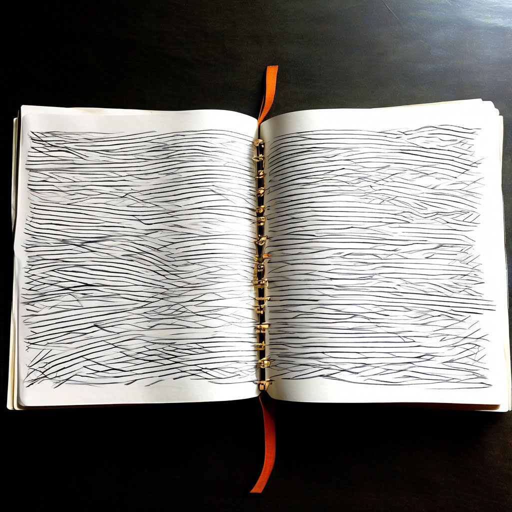

Экспрессивное письмо

Описание:
Техника «Экспрессивное письмо» позволяет признать произошедшее, обозначить чувства и переживания, снизить уровень стресса и улучшить отношения.
Категория техники:
Слова
Время:
5 минут
Зачем:
После кризиса или травмирующего события, перетряхивающего жизнь, письменные практики могут оказаться полезными, так как: они позволяют признать, что случившееся — случилось, обозначить чувства и переживания, осмысливать их; постепенно переживания выстраиваются в последовательность во времени, могут быть исследованы причинно-следственные связи; в историю могут быть включены дополнительные точки зрения и контексты, делающие описание еще более насыщенным и связывающие описываемое событие с другими событиями в прошлом, настоящем, альтернативном настоящем и возможном будущием; в процессе письма о событиях и переживаниях автор начинает занимать более отстраненную, рефлексивную позицию, позволяющую ему сформулировать свое отношение к происшедшему; по мере описания история становится все более связной и понятной; в результате высвобождаются когнитивные ресурсы для взаимодействия с миром в настоящем моменте; снижается уровень стресса, организм возвращается к оптимальному функционированию; появляется больше внимания к другим людям, улучшаются отношения.
Как это работает:
Когда мы сосредотачиваемся на одной мысли или переживании, запечатлевая их письменно, процессы осознавания и мышления идут качественно иначе по сравнению с тем случаем, когда мы не привлекаем письменную речь. Письменное выражение переживаний позволяет переключиться с непроизвольного (навязчивого, руминативного, повторяющегося) мышления на творческое, ориентированное на решение жизненных задач. Выделяя время на письменное самоисследование (особенно если мы делаем это достаточно регулярно), мы подтверждаем собственную ценность, выстраиваем новые отношения с собой, основанные на сочувствии к себе и уважительном любопытстве. С точки зрения концепции Л. С. Выготского, согласно которой в критические периоды развития прежние навыки саморегуляции оказываются неадекватными требованиям текущей задачи, письменная «речь-для-себя» оказывается наиболее развернутой формой рефлексивной саморегуляции, позволяющей человеку занять авторскую позицию по отношению к своим психическим процессам и «пересобрать» собственную систему саморегуляции эмоций и поведения на новом уровне сложности. Письменные практики помогают осознать особенности внутренней коммуникации различных субличностей человека друг с другом (и с внешним миром) и дают возможность самостоятельно проводить «совещания», «медиацию» или «круглые столы» частей или голосов. В результате внутренняя коммуникация становится более гармоничной, снижается уровень внутренней конфликтности. Приватность личных письменных практик, отсутствие внешнего потенциально осуждающего взгляда способствует выражению переживания без самоцензуры, максимально искренне. Подобная честность с собой способствует личностному росту. Письменное запечатление переживаний и размышлений создает «моментальный снимок» внутренней жизни, объект, к которому можно возвращаться, сравнивать его со «снимками» из других периодов жизненного пути и отслеживать повторяющиеся темы, вопросы, видеть развитие, отмечать достижения. Письменные практики обеспечивают возможность самопознания в том темпе и форме, которые лучше всего подходят к сочетанию возможностей человека и условий актуальной ситуации.
Алгоритм выполнения:
-
Первая сессия письма В течение 15–20 минут составьте список (или пишите сплошным текстом), чему вы научились, какие у вас появились способности, умения, знания, какие сильные стороны вашей личности развились в результате того, что вы пережили тяжелое событие или живете в хронически тяжелой ситуации. Может быть, это умения, связанные с тем, чтобы выдерживать боль и действовать, несмотря на боль. Может быть, это эмпатия, чувствительность к чужому страданию, забота о других. Может быть, это стоицизм, или сочувствие себе, или упорство, или все это, вместе взятое, или что-то еще. Может быть, это что-то, что вызывает у вас гордость (даже если вы обычно не позволяете себе думать и говорить о себе как об особенном человеке, который лучше других). Посмотрите на ситуацию как на учителя, который явился незваным и от уроков которого невозможно увильнуть.
-
Вторая сессия письма В этот раз пишите 15–20 минут о том, как вы учились тому, чему научились. Эта сессия письма может быть самой напряженной и тяжелой, потому вам придется обратиться к воспоминаниям о сложных и тяжелых моментах. Что вы чувствовали тогда, когда пришли к осознанию, что в этой ситуации нужно учиться, развиваться, меняться? Кто поддерживал — и что поддерживало — вас в те моменты? Может быть, это были вера в Бога и в осмысленность жизни — даже такой, надежда на лучшее, чувство юмора, способность наслаждаться прекрасным, поддержка других людей?
-
Третья сессия письма В этот раз пишите 15–20 минут о том, как то, чему вы научились в тяжелые периоды жизни, потом помогало вам и/или другим людям. Подумайте о том, какие слабые стороны ваших родителей вы не смогли унаследовать из-за того, что столкнулись с этой тяжелой ситуацией, и от каких вредных привычек мышления, действия, общения вам пришлось избавиться. Какие ограничивавшие вас убеждения вы оставили в прошлом? Каких рисков вы избежали? В каком отношении вы стали по-человечески лучше, чем могли бы стать, если бы вам не пришлось жить в этой ситуации и иметь дело с ее последствиями? Как то, чему вы научились, может помочь вам в решении ваших текущих задач и проблем?
-
Четвертая сессия письма (необязательная) В этой сессии письма вам необходимо пересмотреть все то, что вы написали в предыдущих сессиях. Что все это значит для вас? Если бы вы читали книгу о таком человеке, как вы, как бы вы относились к себе-герою? К чему эта книга подталкивала бы вас, на что вдохновляла бы? Что бы вы хотели в нее добавить, дописать?
Дополнительные упражнения:
- Короткие письма разным адресатам Рассказ случайному попутчику в поезде «Шестнадцать тем»
Почитать больше о технике:
- Адамс, Кэтлин. Дневник как путь к себе. 22 практики для самопознания и личного развития. — М.: Манн, Иванов и Фербер, 2018. Баркер Э. Бумага все стерпит: как экспрессивное письмо делает нас здоровее. Веб-публикация: https://ideanomics.ru/articles/16985 [05.03.2020]. Кутузова Д. Какие факторы оказываются важными при экспрессивном письме? (пересказ статьи Джоан Фраттароли). Веб-публикация: http://www.pismennyepraktiki.ru/kakie-faktory-vazhny-pri-ekspessivnom-pisme/ [12.03.2020]. Кутузова Д. Письменная практика — «Шестнадцать тем». — М.: И. Б. Белый, 2016. Леви М. Гений внутри. Фрирайтинг для поиска идей и решений задач. — М.: МИФ, 2020. Ляшенко В. Метод экспрессивного письма Пеннебейкера. Веб-публикация: https://www.b17.ru/blog/66644/ [05.03.2020]. Письмотерапия: открывая душу на бумаге. Веб-публикация: https://remedium-nn.ru/?id=10894 [15.03.2020]. Райдер, Кэрролл. Bullet Journal метод. Переосмысли прошлое, упорядочи настоящее, спроектируй будущее. — М.: Бомбора, 2019. Miller S. D. The Outcome of Psychotherapy: Yesterday, Today, and Tomorrow // Psychotherapy. — 2013. — 50(1). Pennebaker, James W. Opening up by writing it down: how expressive writing improves health and eases emotional pain. PhD, Third edition. — New York, Guilford Press, 2016. Rainer T. The New Diary: How to Use a Journal for Self-Guidance and Expanded Creativity. — TarcherPerigee; Updated edition, 2004. Reid, Clyde H. Dreams: Discovering Your Inner Teacher. — Winston Pr; 2nd edition, 1983. Vromans, Lynette P., Schweitzer, Robert D. Narrative therapy for adults with a major depressive disorder: Improved symptom and interpersonal outcomes, Psychotherapy Research. Taylor@Francis online, 19 March 2010. Веб-публикация: https://www.tandfonline.com/doi/abs/10.1080/10503301003591792 [10.05.2020].
Рекомендуем прочитать:
- Pennebaker J.W. The Secret Life of Pronouns: What Our Words Say about Us. — N.Y.: Bloomsbury Publishing, 2011. Progoff I. At a Journal Workshop. — N.Y.: Dialogue House, 1977; Кутузова Д. А. Ведение «структурированного дневника» по методу Айры Прогоффа // Московский психотерапевтический журнал. — 2009. — № 1. Rainer, Tristine. The new diary: how to use a journal for self-guidance and expanded creativity. — TarcherPerigee, 2004. Christina Baldwin. One to One: Self-Understanding Through Journal Writing. — M. Evans & Company; 2nd edition, 1991. James W. Pennebaker, Joshua M. Smyth. Opening Up by Writing It Down, Third Edition: How Expressive Writing Improves Health and Eases Emotional Pain. — The Guilford Press, 2016. Кэтлин Адамс. Дневник как путь к себе. 22 практики для самопознания и личного развития. — М.: МИФ, 2018. Кэрролл Райдер: Bullet Journal метод. Переосмысли прошлое, упорядочи настоящее, спроектируй будущее. — М.: Бомбора, 2019. Джендлин Ю. Фокусирование. Новый психотерапевтический метод работы с переживаниями. — М.: Класс, 2000 Кэтлин Адамс. Указ. соч. Кутузова Д. Месяц письменных практик. — М.: Издательские решения, 2020. Письменные практики в помощь себе и другим. Веб-публикация: https://pismennyepraktiki.com/; James W. Pennebaker, Joshua M. Smyth. Opening Up by Writing It Down, Third Edition: How Expressive Writing Improves Health and Eases Emotional Pain. Выготский Л. С. Собрание сочинений в 6 т. Т. 4: Детская психология. — М.: Педагогика, 1984. Письменные практики в помощь себе и другим. Веб-публикация: https://pismennyepraktiki.com/; James W. Pennebaker, Joshua M. Smyth. Opening Up by Writing It Down, Third Edition: How Expressive Writing Improves Health and Eases Emotional Pain. Письменные практики в помощь себе и другим. Веб-публикация: https://pismennyepraktiki.com/write_compass/zdorove-15-minut-low. Кутузова Д. Месяц письменных практик. — М.: Издательские решения, 2020. Письменные практики в помощь себе и другим. Веб-публикация: https://pismennyepraktiki.com/. Кутузова, Д. Письменная практика «Шестнадцать тем». — М.: И. Б. Белый, 2016.